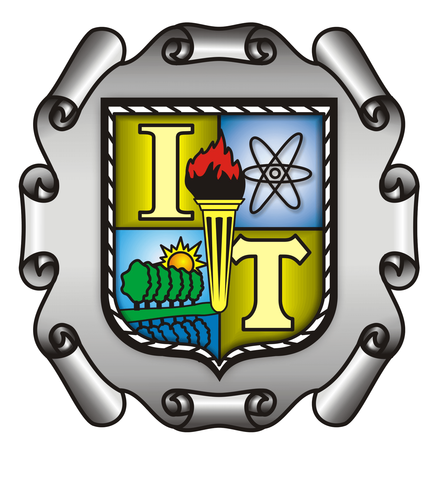

LABORATORIOS DEL INSTITUTO TECNOLÓGICO DE SALTILLO
MECATRÓNICA, ELECTRÓNICA Y ELÉCTRICA

MECATRÓNICA, ELECTRÓNICA Y ELÉCTRICA

Como parte de la materia de Taller de Investigación, este sitio surge como una plataforma centralizada para la consulta de información sobre los laboratorios de Mecatrónica, Electrónica y Eléctrica del instituto.